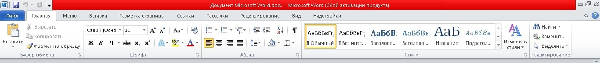

рассмотрим интерфейс word2010 его достоинства и не достатки
Недостатки интерфейса word заключаются в самом нововедении под названием "лента", она сразу же бросается в глаза и может отвлечь от составления документа. Вкладки в итерфейсе довольно скромны, не же ли вкладки в старом интерфейсе. Саму ленту можно настроить под себя, но разве пользователь приобретал данную программу, чтоб заниматься настройкой интерфейса. Нет он брал, чтоб использовать программу по назначению. Еще минус - это большие значки на ленте из-за них она занимает довольно много пространства. Это не так страшно для машин с хорошим разрешением и видеокартой. 